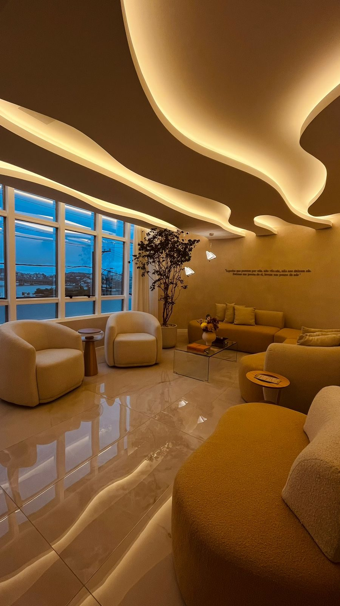

Depoimentos
O que nossos pacientes dizem


A BISA é um instituto de medicina integrativa dedicado a construir saúde real — com base em equilíbrio hormonal, longevidade e alta performance. Em Florianópolis.
Esses sinais têm causa. E a causa tem tratamento.
Na BISA, não tratamos sintomas isolados. Identificamos o que está gerando o desequilíbrio e construímos um protocolo personalizado para resolver na raiz — com base em ciência, acompanhamento contínuo e uma visão completa do seu organismo.

BISA é o Bernhardt Instituto de Saúde Integrativa — uma clínica de medicina integrativa localizada em Florianópolis, integrada ao grupo do Instituto BEEyond, by Carolina Ferrão.
Nossa abordagem une saúde hormonal, longevidade e medicina preventiva em protocolos completamente individualizados. Cada paciente passa por uma avaliação profunda — não apenas dos sintomas, mas das causas que geram os desequilíbrios ao longo do tempo.
O resultado é um acompanhamento contínuo que constrói saúde de forma sustentável: com mais energia, melhor qualidade de vida e longevidade real.
Saiba mais sobre a BISAUm processo estruturado que começa com escuta aprofundada, passa por investigação completa e resulta em um protocolo totalmente personalizado.
Uma consulta aprofundada para conhecer seu histórico completo, sua rotina, seus sintomas e seus objetivos. Aqui começamos a entender você como um todo — não apenas os seus exames.
Análise de exames com um olhar além do convencional. Mapeamento hormonal, avaliação dos sistemas do organismo e identificação das causas dos desequilíbrios — não só dos sintomas.
Criação de um plano exclusivo para o seu perfil. Combinamos medicina integrativa, modulação hormonal, suplementação funcional e orientações de estilo de vida — tudo ajustado à sua biologia.
Saúde não se constrói em uma consulta. Acompanhamos sua evolução de forma contínua, ajustando os protocolos conforme seu corpo responde. O objetivo é resultado real e duradouro.
Não trabalhamos com tratamentos isolados. Trabalhamos com o paciente como um todo — integrando os sistemas do organismo em um único protocolo personalizado.
Avaliação e modulação do equilíbrio hormonal feminino e masculino. Tratamento das causas do desequilíbrio — não apenas reposição.
Saiba maisProtocolos preventivos para desacelerar o envelhecimento celular, preservar a vitalidade e ampliar a qualidade de vida com o passar dos anos.
Saiba maisInvestigação das causas do cansaço crônico, baixa disposição e queda de rendimento físico e mental. Recuperação da capacidade de alta performance.
Saiba maisAbordagem médica integrada para ganho de massa muscular, redução de gordura e regulação metabólica — com base na causa, não apenas na dieta.
Saiba maisDiagnóstico e tratamento das alterações do sono com impacto direto na saúde hormonal, imunidade e qualidade de vida.
Saiba maisAbordagem que conecta saúde hormonal, microbiota, inflamação e estilo de vida ao humor, ansiedade e clareza mental.
Saiba mais
Não tratamos sintomas isolados. Investigamos os desequilíbrios que os geram — e construímos um protocolo para resolver na raiz.
Nenhum paciente recebe o mesmo tratamento. Cada protocolo é construído com base na sua biologia, histórico e objetivos de vida.
A saúde se constrói com o tempo. Acompanhamos você de forma contínua — monitorando resultados e ajustando os protocolos conforme o seu corpo evolui.
A BISA faz parte do mesmo grupo do Instituto BEEyond, by Carolina Ferrão — referência em excelência, inovação e atendimento de alto padrão.
Artigos sobre saúde integrativa, longevidade, equilíbrio hormonal e performance — escritos com base científica, em linguagem acessível.
Os valores de referência dos exames convencionais foram criados para identificar doenças — não para otimizar saúde. Entenda a diferença.
Ler artigo completo →A partir dos 35 anos, mudanças hormonais graduais começam a afetar energia, composição corporal, sono e humor. Saiba o que esperar e o que fazer.
Ler artigo completo →Se você se sente constantemente cansado, mesmo dormindo e descansando, pode haver causas fisiológicas que a medicina convencional frequentemente ignora.
Ler artigo completo →A BISA está localizada em Florianópolis, em um ambiente projetado para que você se sinta cuidado desde o primeiro momento.
Agende sua avaliação integrativa e dê o primeiro passo para construir saúde de verdade — com método, ciência e acompanhamento contínuo.